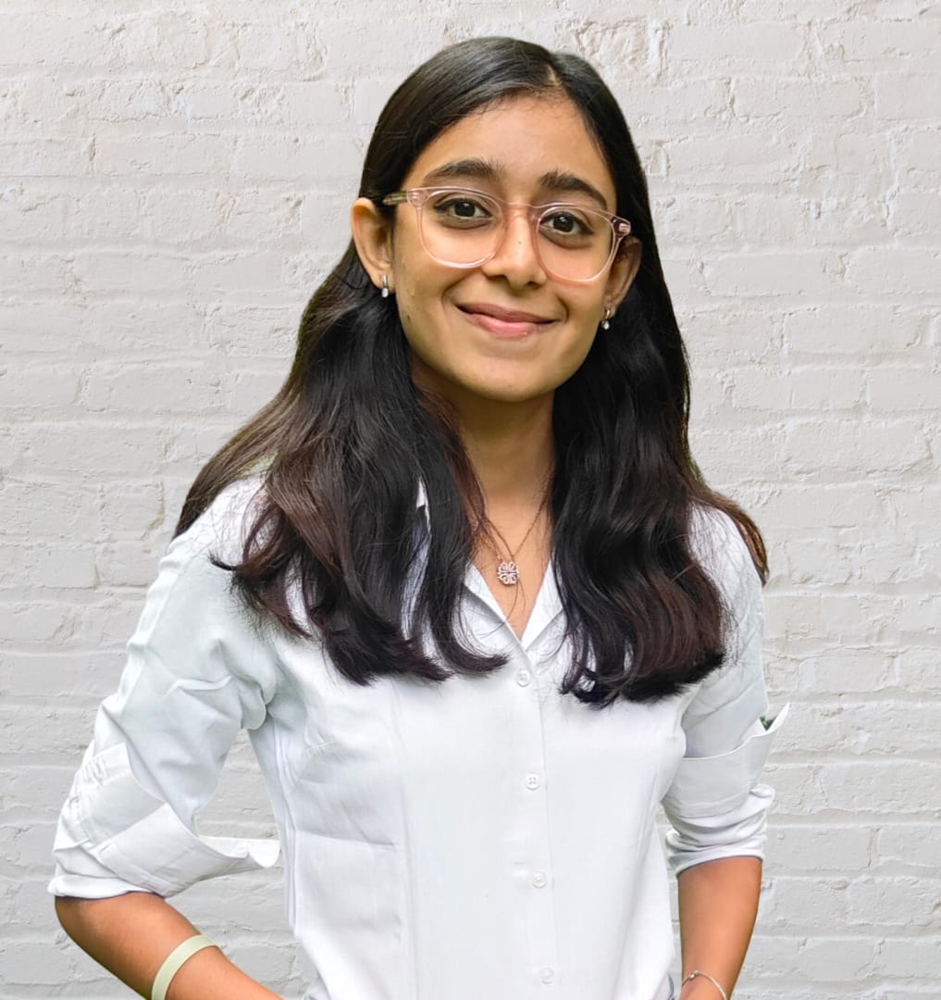

DEEKSHA PANDEY
Vijaya Bank Colony extension, Banaswadi, Bengaluru-560043
(+91) 8792471999 deek019sha@gmail.com

EDUCATION
Ramaiah Institute of Technology, Bengaluru October 2023-Present
Bachelor of Engineering (B.E) in Electronics and Communication Engineering CGPA:9.57
Sri Chaitanya College (CBSE) 2021
Higher Secondary Overall Percentage:88.0
Sri Chaitanya Techno School 2020
Secondary Overall Percentage:94.0
CAREER OBJECTIVE
Enthusiastic and quick-learning engineering student looking for an opportunity to apply my skills
and grow in a challenging, team-oriented environment.
TECHNICAL SKILLS
Language Basics of C,C++,Verilog,HTML
Software MS Office, Latex, MATLAB, Vivado, Cadence-Virtuoso, Scilab, Tinkercad, NI Multism, emu
ACHIEVEMENTS
- Ranked 1st in the Electronics and Communication Engineering Department for the 2nd
semester at Ramaiah Institute of Technology.
- Demonstrated strong analytical and problem-solving skills through academic projects and
coursework.
- Actively participated in IEEE-organized events such as Shark Tank and ISpy at RIT Tech
Fest 2025, showcasing leadership and teamwork skills.
- Actively participated in Smart India Hackathon (SIH) 2025, contributing to innovative
problem-solving in a team-based environment.
RELEVANT COURSEWORK
Network Analysis and Control Systems
Analog and Digital Electronics
Digital Signal Processing
Communication Systems
Microprocessors
Scilab for Signal Processing
PROJECTS
Automatic Hand Sanitizer
Developed a touchless hand sanitizing system using Arduino Uno, an ultrasonic distance sensor,
and a servo motor. The device detects hand proximity and actuates the servo to dispense saniti
-zer,promoting hygiene and minimizing contact. Programmed in Arduino IDE with precise distance
calibration and response timing for efficient operation.
Smart Car Parking System
Developed a smart car parking system using Arduino Uno and ultrasonic sensors to monitor parking
slot availability in real-time. The system detects vehicle presence and displays vacant slots,
improving parking efficiency and reducing search time. Programmed in Arduino IDE with optimized
sensor calibration for accurate detection and reliable operation.
Radar System using Arduino
Developed a radar-based object detection system using Arduino Uno, HC-SR04 ultrasonic sensor, and
servo motor.The sensor scans a 180° range, measuring distances and transmitting angle–distance data
for visualization.Implemented real-time distance calculation, servo control, and serial communication
in Arduino IDE,simulating the working principle of radar technology.
Soil Moisture detection
Developed a soil moisture monitoring system using Arduino Uno, a soil moisture sensor, an LCD
display, and a buzzer. The sensor measures real-time soil water content, which is displayed on the
LCD for continuous monitoring. Implemented threshold-based logic to trigger a buzzer alert when
moisture levels fall below a set value, simulating irrigation alerts for precision agriculture.
Arduino Melody Player
Designed and programmed an Arduino-based system to generate distinct musical tones using multiple buzze
-rs. Implemented frequency modulation techniques by varying PWM signals to produce different notes and
sound patterns. The project demonstrated expertise in timer control, sound wave generation, and embedded
programming for creative audio applications.
Automatic Door Lock using Morse Code
Designed and implemented an Arduino-based door lock system that uses Morse code as the authentication
mechanism. Integrated a servo motor to control door locking/unlocking and a buzzer to indicate
incorrect password attempts. Programmed custom Morse code decoding logic in Arduino IDE for real-time
input validation, ensuring enhanced security and innovative user interaction.
Smoke Detection and Alert System using Arduino
Designed a smoke detection system using Arduino Uno, MQ-series smoke sensor, and buzzer for hazard
indication. Implemented HC05 Bluetooth module to transmit real-time smoke signals to a paired smartphone,
enabling remote monitoring and immediate awareness.
Smart Dustbin
Built a contactless waste bin using Arduino Uno, ultrasonic sensor, and servo motor.
Programmed to detect user proximity and automatically open/close the lid.
Improved hygiene and usability in public spaces with low-cost hardware.
STRENGTHS
Strong analytical and problem-solving skills.
Good communication and interpersonal abilities.
Quick learner and adaptable to new technologies.
EXTRA-CURRICULAR
- Active Member of NSS.
- Volunteered for Shark Tank (RIT Tech Fest 2025, organized by IEEE).
- Participated in ISpy, a logic and observation-based competitive event organized by IEEE at
RIT Tech Fest 2025.
- Participated in a workshop on Radio Frequency Circuits and Systems, organized by Ramaiah
Institute of Technology.
- Attended the SAGE BMSIT Symposium on RF MEMS and Applications in Biomedical, 5G
and Above Communications, and Electronic Warfare Systems, organized by Shastry Associates Global Enterprises.
PERSONAL TRAITS
Highly motivated and eager to learn new things.
Strong motivational and leadership skills.
Ability to work as an individual as well as in group.
PERSONAL INFORMATION
D.O.B.: 19 September, 2005
Languages : Hindi, English, Kannada